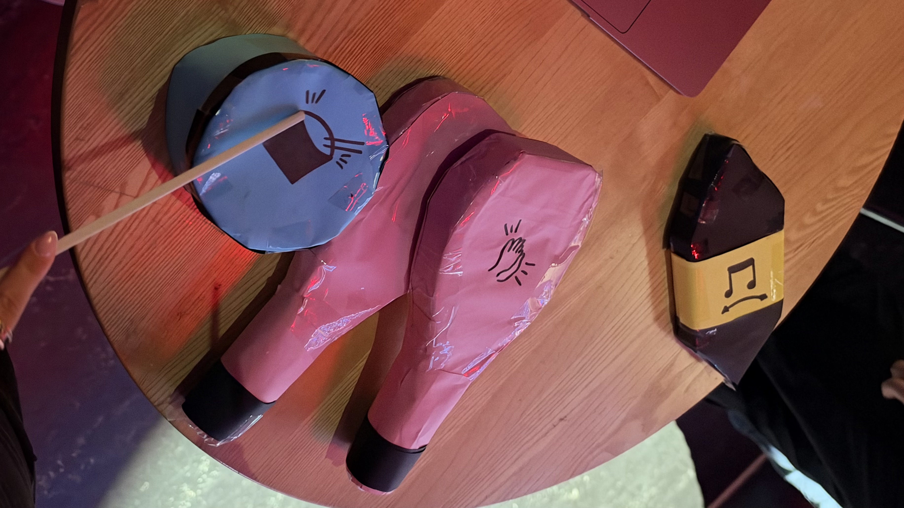
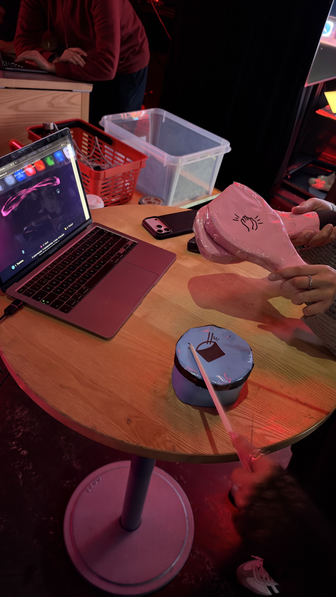
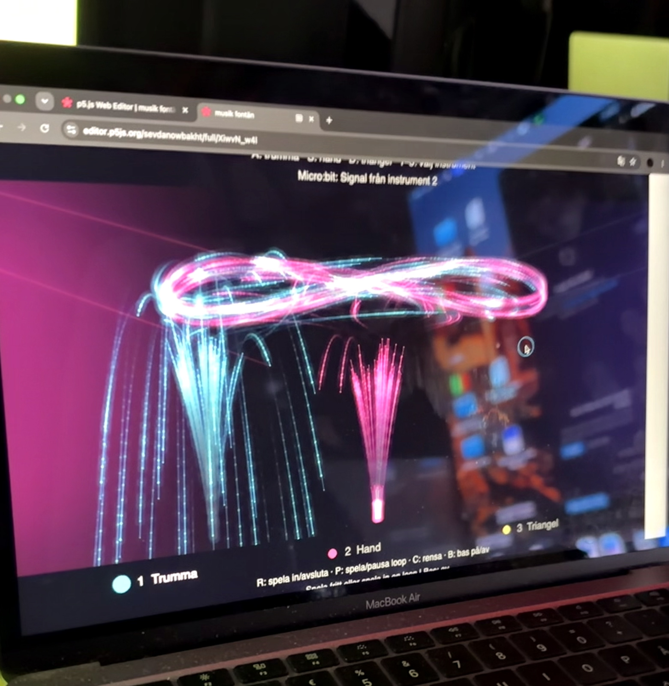
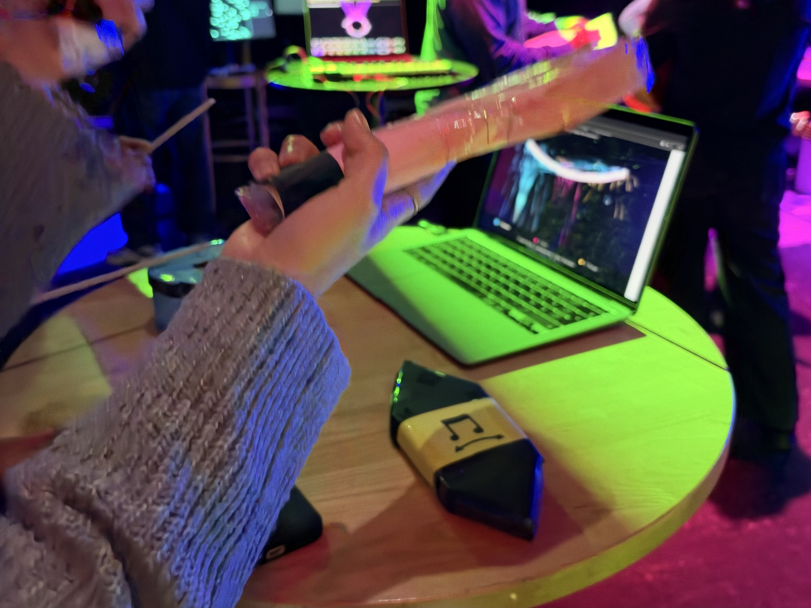
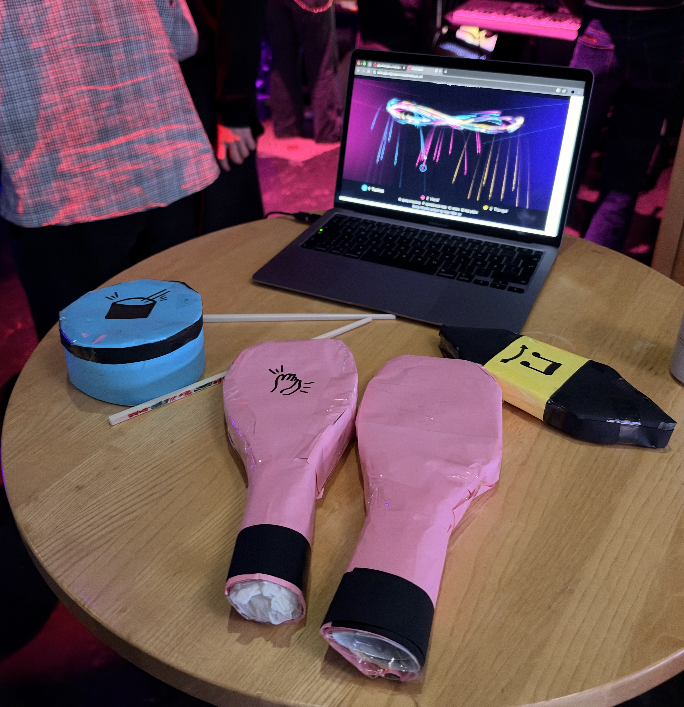

Music Fontain
Created by Joud Anis and Sevda Nowbakht
About the Project
Our project is an interactive music experience that combines physical instruments, sound, technology and visuals. We created three instruments connected to micro:bits that communicate wirelessly with a computer.
When someone plays an instrument, it triggers a sound and generates colorful visual effects on the screen. Each instrument produces a different sound, allowing multiple people to create music together.
The visuals react in real time, creating a colorful, rave-inspired atmosphere. Our goal was to explore how physical interaction and creative programming can work together to create a playful and engaging musical experience.
Project Gallery




